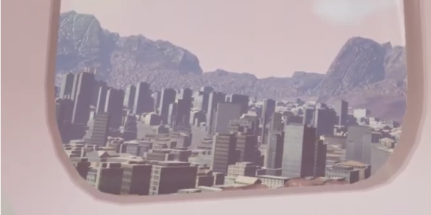
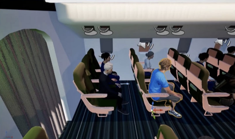

SkyEase VR
SkyEase VR is an immersive VR exposure therapy application designed to help individuals overcome aerophobia (fear of flying). Built in Unreal Engine 5, it places users in a passenger cabin where they can safely confront flight anxiety across takeoff, cruise, and landing.
Research story
Research for this course project showed few VR products aimed at passengers with aerophobia — most flight sims target pilot training. Prior work on VR exposure therapy suggests immersion can help people confront fears (including flight-related anxiety) in a controlled setting. We designed SkyEase as a passenger-focused experience spanning takeoff, cruise, and landing, with subtle cabin motion and engine ambience to support that exposure.

My work
I owned cabin modeling and interior interaction design — including the seatbelt, seatbelt sign, NPC, and seatback screen.
I designed the seatbelt as a physical, slot-based interaction: when the buckle head touches the slot, it snaps in and stays attached until the user presses a release button. A click sound plays on lock so the action feels confirmed, not ambiguous. The seatbelt sign is tied to flight state — lit during takeoff and landing, darkened during cruise — so the cabin responds like a real aircraft and reinforces each stage of the exposure experience.
Gameplay interaction components
- Intuitive Menu Controls
- Dynamic Teleportation
- Head-Tracked Menus
- Seatbelt Physics & Logic
- Window Shade Manipulation
- Curtain Exit (Scene Transition)
- Seatback Screen Prompts
- Takeoff Confirmation Widget
- Pre-Flight & Landing Safety Checks

Playtest feedback
Playtesters said they enjoyed the simulation and found it somewhat realistic. People who already like flying also wanted more experiences and scenarios to explore.